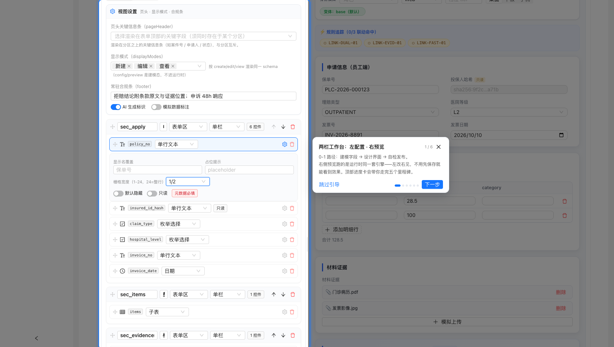
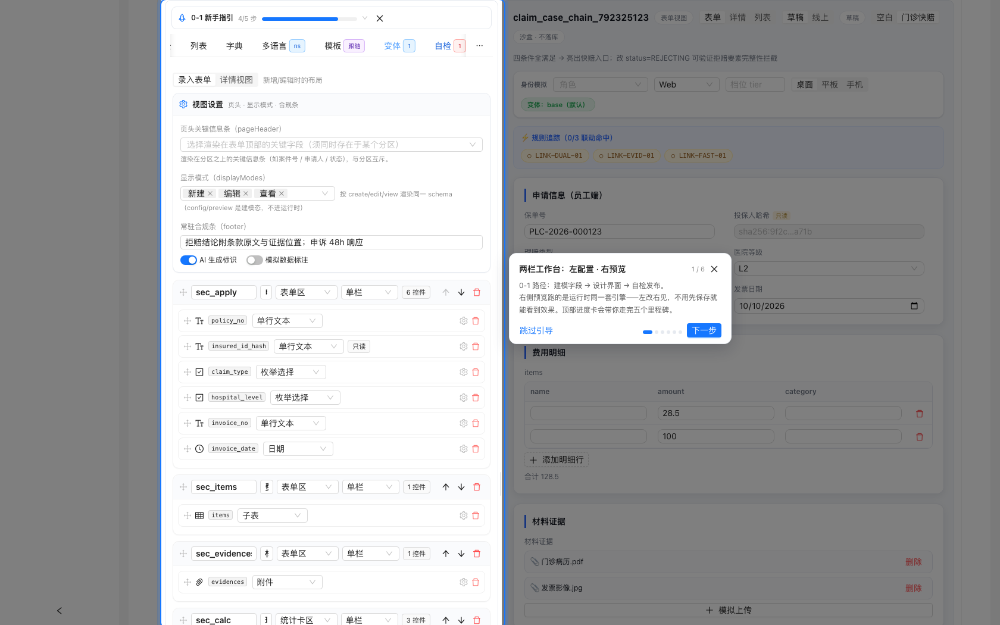
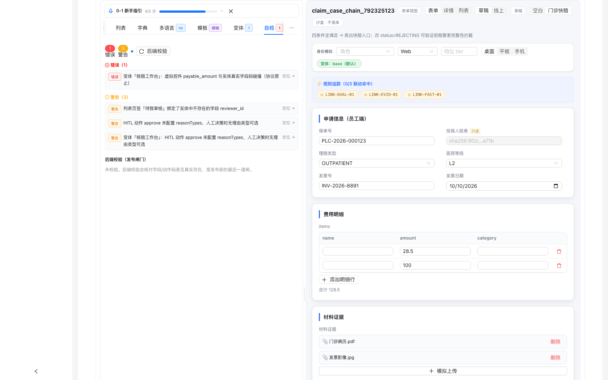
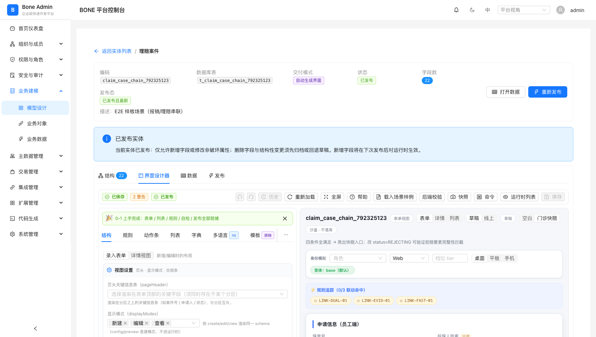

useBoneUiSchema(entityId) 不传 ctx，带条件的变体永不命中——本实体「核赔工作台」变体线上永不生效。| 编号 | 问题 | 严重度 | 影响面 | 证据 |
|---|---|---|---|---|
| P0-1 | 「栅格宽度」写入 props.span，越界协议白名单；预览、运行时、后端四端全部无视，纯报错入口 | P0 | 所有实体的表单布局配置 | 实测 + 静态 |
| P0-2 | 后端变体校验漏「虚拟控件与真实字段码碰撞」规则，前端 lint 错误可绕过发布闸门上线 | P0 | 发布链路 / 协议一致性 | 实测 + 静态 |
| P0-3 | 「详情视图」（views.detail）运行时零消费，创作侧全链路皆死配置 | P0 | 所有实体的详情展示 | 静态 |
| P0-4 | 运行时 ctx 未接，身份模拟/变体/档位在设计器预览之外全部空转 | P0 | 变体/联动/显隐全线 | 静态 |
| P1-1 | 预览与运行时为两套渲染器，「双轨漂移」无任何机器防线（span 是第一个实证，不是最后一个） | P1 | 架构 / 长期维护 | 静态 |
| P1-2 | 后端校验默认不跑，需手点；保存软门禁可强行越过 error | P1 | 发布前质量闸 | 实测 + 静态 |
| P1-3 | 结构面板无控件搜索/过滤，宽表实体定位困难 | P1 | 大数据量实体建模效率 | 实测 |
| P1-4 | 拖拽排序无键盘替代方案，不满足 WCAG 2.1.1 键盘可操作 | P1 | 可达性 / 触屏体验 | 静态 |
| P1-5 | 大 schema（100+ 控件）下结构树/预览无虚拟滚动，性能未治理未度量 | P1 | 大实体建模体验 | 静态 |
| P2-1 | 列表页签绑定不存在字段（reviewer_id）仅警告；displayModes 的 view 态运行时未接线 | P2 | 本实体数据 / 展示态完整性 | 实测 |
结构面板选中控件后，「栅格宽度」下拉可选 1/2、1/3 等。选择后：工具栏立刻出现红色「N 错误」徽标 + 顶部红色横幅；自检面板报
props.span 不在协议白名单（schema.json additionalProperties=false，越界属性运行时不做保证）；保存被确认弹窗拦下。
而就算强行保存，界面也不会有任何可见变化——预览和运行时都不读这个属性。
写入端（设计器唯一写点）：
// StructurePanel.tsx:174-176 —— 「栅格宽度」编辑器把 span 写进 control.props
value={(control.props?.span as number | undefined) ?? undefined}
onChange={(v) => onPatch({ props: { ...control.props, ...(v ? { span: v } : { span: undefined }) } })}
协议端：bone-ui-schema.schema.json 的 definitions/control/properties/props
白名单共 24 项（ai/anchorRef/chartType/childEntity/columns/computedFn/computedFrom/currencyField/dataRef/labelField/lineage/mask/max/maxCount/maxLength/maxSizeMB/min/precision/quoteText/roles/rows/step/targetEntity/tier/valueField/warningText），
无 span，且 additionalProperties:false。前端 constants.ts:245 的 PROP_WHITELIST 与 schema.json 逐项对应，同样无 span。
预览端：SchemaPreview.tsx:502 表单/详情分区一律渲染进固定双栏容器 .uis-grid2，全文无 props.span 读取——改栅格宽度，预览纹丝不动。
运行端：BoneDynamicForm.tsx 零 span 引用；后端 Java 零 span 引用，且对 props 整体无校验。
活体实测（设置栅格宽度=1/2 后的真实界面）：

典型的「半成品能力上线」：栅格宽度的交互做了，但协议 ratified（span 进 schema.json + PROP_WHITELIST + 后端白名单）、 预览渲染、运行时渲染四步都没做。更深的病根是双渲染器架构——预览与运行时各写一套布局逻辑，任何一侧漏接就静默失效。
Retool / Appsmith / 阿里宜搭这类低代码平台的第一信任是「所见即所得」：画布上调的每个属性，发布后必须 1:1 兑现。 「能选、必错、无效」三件事同时成立的控件，比没有这个控件更糟——它同时浪费用户时间、污染 schema、训练用户忽视 lint 报错。
短期止血（1 人日）：从 UI 下线「栅格宽度」入口，或置灰 + tooltip「协议评审中，下个版本开放」。绝不留一个写了必错的入口。
中期正道（3-5 人日）：把栅格提升为一等协议能力：① schema.json 的 props 增加 span（integer，1-12 或枚举 1/2/3/4/6/12）；② PROP_WHITELIST 同步（constants.ts 注释已要求两边同改）；③ 预览 .uis-grid2 与 BoneDynamicForm 都按 span 渲染（antd Row/Col）；④ 后端若将来做 props 白名单校验一并同步。
长期更优解：布局不该挂在每个控件的 props 上（改一行布局要逐控件刷 span）。可演进为 section 级 layout: { rows: [{ span, fields }] }，控件与布局解耦。此改动较大，建议 v1.3 评估，v1.2 先用 props.span 过渡。
对该实体做零交互加载（不点任何东西），工具栏即显示「已保存 · 1 错误 · 3 警告 · 已发布」，
红色横幅明示：变体「核赔工作台」：虚拟控件 payable_amount 与实体真实字段码碰撞（协议禁止）。
即：发布态 schema 本身就带着协议错误在线上跑。
前端 lint 两个作用域都查（lint.ts:93-97）：
} else if (c.virtual) {
// fieldCode 禁与真实字段码碰撞（否则联动/字典会误命中）
if (...) issues.push({ level: 'error', message: `虚拟控件 ${c.fieldCode} 与实体真实字段码碰撞（协议禁止）` ...})
后端只查 base、不查变体（UiSchemaApplicationService.java）：base 循环有碰撞检查，变体循环只有「非 virtual 字段不存在」检查：
// 行 673-677 —— base 视图：virtual 控件撞真实字段 → UI_REF_04 ERROR if (control.path("virtual").asBoolean(false) && refs.fieldCodes().contains(fieldCode)) { issues.add(EntityValidationIssue.error(UiSchemaRefCodes.UI_REF_04, "virtual 控件与真实字段码碰撞：" + fieldCode)); } // 行 721-740 —— 变体视图：只查 !virtual && 字段不存在， // 没有 virtual 碰撞分支 ⇒ payable_amount(virtual=true, 真实字段) 静默通过
数据侧实锤：该实体 22 个真实字段中包含 payable_amount；发布快照的变体「核赔工作台」form 分区第 1 个控件正是
{"fieldCode":"payable_amount","controlKind":"COMPUTED","virtual":true}。draft == published（20:05 发布），错误随发布上线。
保存是软门禁（UiSchemaDesigner.tsx:347）：本地自检仍有 N 个错误，确定保存？（发布前必须修复）——确认即可越过。

前后端两套校验规则各自演化，没有「规则清单对账」机制。前端加了变体作用域的碰撞检查，后端没跟上； 发布链路调后端 validate，于是前端的 error 在后端眼里不存在——软确认 + 后端漏检 = 错误直通上线。
数据库迁移工具（Flyway/Liquibase）的发布闸门是硬的：dry-run 有 error 就不让 apply，要过必须显式 --force 且留审计。
表单协议是线上渲染行为的唯一真源，理应同规格——error 直通等于把「渲染错乱/联动误命中」的风险直接部署给终端用户。
立即（0.5 人日）：后端变体循环补 virtual 碰撞检查，与 base 同口径（UI_REF_04）。
本周（1 人日）：建立「lint 规则 ↔ 后端 UI_REF 码」对账清单（可入 UiSchemaContractTest 的断言范围——该测试已经在做 schema.json 与白名单常量的一致性断言，天然是放对账清单的地方）；漏一项 CI 红。
本周（1 人日）：保存/发布链路把 error 从「软确认」升级为「禁用按钮 + 豁免需填理由并记录」，消灭无意识直通。
设计器可以为「详情视图」配置分区、页头关键信息条，预览也能切到详情态查看；但终端用户打开记录详情时， 看到的是全字段平铺的 Descriptions 列表——views.detail 的任何配置都不参与渲染。
创作侧全家桶：视图切换命令「切换：详情视图」（UiSchemaDesigner.tsx:462）、
SchemaPreview.tsx:570 预览读 views.detail.sections、lint.ts:409-410/430-431 校验详情分区与页头、
VariantsPanel.tsx:123 变体合并 detail、schemaOps.ts:18/506 详情读写与合并、后端 validateNodes 也校验 detail 分区。
运行时零消费：全仓 grep views.detail 命中全部落在设计器侧与测试；RuntimeDataManagement.tsx 的详情抽屉是平铺 Descriptions；
全前端无第二个 ui-schema 消费应用；后端 Java 零引用。
本实体实例：变体「核赔工作台」甚至专门配了 detail 视图（decision_trace 时间轴控件）——纯死配置，永不渲染。
协议与创作侧先行，运行时渲染器没跟上（又是双轨）。反过来说，这也是四个 P0 里最好修的一个：协议、校验、预览都齐了，只差运行时渲染器把详情抽屉从「平铺」改为「投影 views.detail」。
详情视图是表单类平台的刚需（钉钉宜搭/阿里宜搭均支持「表单布局」与「详情布局」分离，因为录入要紧凑、查阅要突出关键字段）。 让用户花时间配一个不渲染的视图，是低代码平台差评的常见来源。
推荐方案（2-3 人日）：运行时详情抽屉改为消费 views.detail：pageHeader 渲染关键信息条，sections 按分区渲染。
可抄近路——ListPanel.tsx:224 已有「列投影」的运行时消费先例（执行期 schema 取 published 快照），同一模式搬到详情即可。
兜底方案（0.5 人日）：若本迭代排不进，设计器隐藏「详情视图」入口 + lint 对 views.detail 降级为 info「运行时未消费，暂不生效」——至少停止制造新的死配置。
设计器预览面板提供「身份模拟」（角色/档位/渠道/设备），切到 reviewer 角色能实时看到变体「核赔工作台」的布局。 但终端用户（哪怕真是 reviewer 登录）打开录入表单时，永远看到 base 布局——变体的 match 条件在运行时永不命中。
// useBoneUiSchema.ts:41 —— ctx 是签名支持的 export function useBoneUiSchema(entityId: string | null, ctx: UiContext = {}): UseBoneUiSchema { ... const schema = useMemo(() => (raw ? resolveVariant(raw, ctx) : null), [raw, ctx]); // RuntimeDataManagement.tsx:330 —— 唯一调用点，不传 ctx ⇒ resolveVariant(raw, {}) const uiSchemaPipe = useBoneUiSchema(selectedEntity?.id != null ? String(selectedEntity.id) : null); // RuntimeDataManagement.tsx:1852 —— BoneDynamicForm 拿到的就是 base 裁决结果 <BoneDynamicForm schema={uiSchemaPipe.schema} ... />
BoneDynamicForm 内无 UiContext/resolveVisibleActions/linkageState 引用；
metadata 应用也不读 shell 下发的 __BONE_GLOBAL_CONTEXT__——身份信息在运行时根本没有进入协议管线。
引擎层（resolveVariant/evalCond/linkageState/fieldVisible/resolveVisibleActions）是按 ctx 设计的，预览侧把 ctx 接上了， 运行时侧没接——又是「预览-运行时双轨」的同一病根，只是这次漂移的是整个变体特性。
角色差异化表单（审核台 vs 录入台）是 B 端表单平台的核心卖点。设计器提供身份模拟却不接运行时， 等于卖了一个「演示时可看」的功能——验收时建模者按预览验收，上线后用户按 base 使用，预期差极大。
接线（1-2 人日）：运行时组装 UiContext：roles 取自 /api/v1/iam/me 的 scopes 或 shell 全局上下文；tier/channel/device 按页面可知信息填；
传入 useBoneUiSchema(entityId, ctx)；BoneDynamicForm 透传 ctx 给联动/显隐计算。
防回归（0.5 人日）：加一条「预览-运行时一致性」探针：同一 ctx 下，SchemaPreview 与 BoneDynamicForm 对同一 schema 的渲染结构（分区/控件集合）必须一致——这正是能早期抓住 span 类漂移的机器防线。
SchemaPreview 与 BoneDynamicForm 是同一协议的两套独立实现。span 案例证明漂移已经发生；每新增一个协议能力（如未来的 span、详情视图、变体动作），都要靠人记得「两边都改」。目前没有任何测试/探针约束两边一致。
两条路：① 抽共享控件渲染库，预览与运行时同源（彻底，工作量大）；② 用现有基础设施做「渲染结构快照」契约测试——samples.ts（场景样例）+ snapshots.ts（快照）已就绪，扩展为同一 schema 下两个渲染器的结构快照对跑，CI 断言一致（务实，1-2 人日起步）。
LintPanel 初始状态是「未校验」，revalidate() 只能通过工具栏按钮或命令面板手动触发，进设计器不会自动跑；保存时 lint error 仅弹确认框，可强行越过（与 P0-2 叠加成直通链路）。
挂载后自动跑一次后端校验（便宜，一次请求）；发布前强制刷新校验结果并作为硬闸；保存有 error 时按钮禁用，豁免走「填理由 + 记录」通道。
22 个字段时结构树尚可接受；主数据类宽表实体（100+ 字段、十几个分区）里找一个控件只能靠滚。面板无搜索框、无按控件类型过滤、无分区折叠状态记忆。
加控件搜索框（匹配 displayName/code，命中即定位滚动）；分区折叠状态按实体持久化；支持按 controlKind 过滤。属纯前端增量，2 人日左右。
drag.ts 为纯鼠标拖拽实现，无 keydown/tabIndex/role 等键盘可达性支撑。WCAG 2.1.1 要求功能键盘可操作；触屏板用户做长距离拖拽也痛苦。
每个可拖拽行提供「上移/下移」按钮 + 快捷键（如 Alt+↑/↓），拖拽降级为增强通道。1 人日。
结构树与预览均无虚拟滚动；undo/redo 是全量 schema 快照式历史栈。22 控件流畅，但 100+ 控件、深嵌套分区的实体未测过，「卡」会以「建模者不愿用」的形式出现，难以归因。
先用 Performance 面板记录一次 100 控件实体的编辑帧耗时（0.5 人日拿到数据），再决定是否上虚拟滚动/历史栈差量化。先度量后优化，别凭感觉。
① 本实体列表页签「待我审核」绑定 reviewer_id——实体无此字段（真实字段是 second_reviewer），lint 仅报 warning；该页签在运行时的筛选实际是空跑。
② displayModes 配了 create/edit/view 三态，运行时只传 create/edit（RuntimeDataManagement.tsx:1857），view 态未接线——查看态复用 edit 渲染。
① 列表页签绑定字段建议从 warning 升为 error（筛选条件引用不存在字段 = 功能坏死），并修正本实体数据；② view 态补传（0.5 人日），或先在协议文档标注查看态回落规则。
| 能力 | 为什么是对的 |
|---|---|
| lint 分层（error/warning/info） | 协议违规（error）与待评审扩展（warning，如 optionsRef 走 PROPS_PENDING_REVIEW）分开处置，给协议演进留了缓冲带，避免「要么全要么无」。 |
| published 快照优先的执行期 schema | useBoneUiSchema 的 executionSchema 取 published 优先、未发布回落 draft——建模者改草稿不会让线上行为漂移，发布闸门语义清晰。 |
| 乐观锁 + beforeunload 双向防丢稿 | 保存带 lockVersion（UiSchemaDesigner 传参），刷新有 beforeunload 确认（行 554 已接），工具提示与行为一致，没有「承诺了没做」。 |
| 命令面板 / 快照 / undo-redo / 新手指引 | 设计器生产力设施齐全，命令面板把「跳到某面板/运行校验」这类高频操作路径缩到一键。 |
| 后端 UI_REF 错误码体系 | 前后端日志可对账（错误码而非中文文案），发布闸门有机器判据——缺的只是规则覆盖面（见 P0-2）。 |
| 场景样例按实体领域过滤 | SchemaPreview 的 visibleScenarios 过滤跨领域演示场景，避免「门诊快赔」出现在报销单上的误导——细节考虑到位。 |
| 阶段 | 事项 | 工作量 | 对应问题 | 验收判据 |
|---|---|---|---|---|
| Phase 1 止血 本周 |
后端变体循环补 virtual 碰撞校验（UI_REF_04 同口径） | 0.5 人日 | P0-2 | 用当前实体 draft 打后端 validate，必须报 UI_REF-04 |
| 下线/置灰「栅格宽度」编辑器（协议 ratified 前不可写） | 0.5 人日 | P0-1 | 结构面板无 span 写入口；lint 不再因 span 报错 | |
| 保存/发布 error 硬闸：禁用保存按钮，豁免需填理由 | 1 人日 | P0-2 / P1-2 | 有 error 时保存按钮 disabled；豁免记录可查 | |
| Phase 2 契约收敛 1-2 周 |
运行时详情抽屉消费 views.detail（pageHeader + sections 投影） | 2-3 人日 | P0-3 | 配置详情视图后，终端详情页按分区/页头渲染 |
| 运行时 ctx 接线（me/scopes → UiContext → useBoneUiSchema → BoneDynamicForm） | 1-2 人日 | P0-4 | reviewer 登录线上看到「核赔工作台」变体布局 | |
| 「预览-运行时一致性」契约探针（同 schema 双渲染器结构快照对跑） | 1-2 人日 | P1-1 | CI 可跑；人为制造一处预览/运行时分歧必须变红 | |
| lint 规则 ↔ UI_REF 码对账清单入 UiSchemaContractTest | 1 人日 | P0-2 | 删掉任一侧规则，契约测试红 | |
| Phase 3 体验与协议演进 2-4 周 |
span 进协议（schema.json + 双渲染器渲染 + PROP_WHITELIST 同步），栅格编辑器回归 | 3-5 人日 | P0-1 | 设 1/2 后预览与运行时布局同步变化；协议测试绿 |
| 结构面板搜索/过滤/折叠记忆；拖拽行加键盘上下移 | 3 人日 | P1-3 / P1-4 | 100 字段实体 10 秒内定位任意控件；键盘可完成排序 | |
| 后端校验自动触发（挂载即跑）+ 100 控件实体性能度量 | 1 人日 | P1-2 / P1-5 | 进设计器即有校验结果；有帧耗时基线数据 | |
| 列表页签字段绑定升 error；displayModes view 态接线；修本实体 reviewer_id 数据 | 1 人日 | P2-1 | 本实体 lint 全绿；查看态按协议渲染 |
协议真源 bone-engine/bone-metadata-server/src/main/resources/ui/bone-ui-schema.schema.json ↔ 后端校验 UiSchemaApplicationService.java ↔ 前端自检 lint.ts / constants.ts ↔ 预览 SchemaPreview.tsx ↔ 运行时 BoneDynamicForm.tsx / RuntimeDataManagement.tsx，逐条能力比对消费关系。
Playwright（注入 token/bone-user 免登录）打开设计器，做两类实验：① 零交互加载，抓工具栏徽标 + 自检面板全量条目；② 交互实验：设置栅格宽度=1/2，对比操作前后 lint/保存行为/界面变化。实体草稿经 API 复核零污染（探针从未保存成功）。
直接 GET /api/v1/metadata/entities/{id}/ui-schema 与 /fields，解析 draft/published JSON 比对，确认错误随发布上线、span 零残留。


备注：本诊断未改动任何业务代码。过程中仅为恢复 dev server 编译，修复过一处并行编辑会话遗留的语法笔误（lint.ts，当前文件已由该会话继续演进，编译正常）。